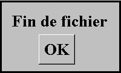

Les boutons peuvent être placés dans l'ordre de saisie de la page Xwin.
Si un bouton ne fait pas partie de l'ordre de saisie, le curseur ne s'y arrêtera jamais. Le seul moyen pour actionner un tel bouton est de cliquer dessus avec la souris (ou d'utiliser un raccourci clavier).
Si un bouton est placé dans l'ordre de saisie, il sera possible de lui donner le focus au clavier. Lorsque le curseur est placé sur un tel bouton, la frappe de la touche Entrée ou Espace actionne également le bouton.
Par défaut, un bouton ne fait pas partie de l'ordre de saisie. Pour qu'il puisse en faire partie, il faut activer sa propriété "En saisie".
Remarque : Dans les boîtes de dialogue de Windows, les boutons font toujours partie de l'ordre de saisie. Sous Harmony, cette possibilité n'est généralement pas utilisée. Elle peut toutefois servir si l'on souhaite saisir un masque ne comportant aucune donnée "En saisie". Par exemple :

Cette fenêtre ne comporte aucune donnée en saisie. Si le bouton OK n'est pas placé dans l'ordre de saisie de la page, il sera impossible d'entrer en saisie sur cette fenêtre. Avec le bouton déclaré "En saisie", le focus sera donné au bouton (et l'utilisateur pourra taper Entrée ou cliquer sur le bouton pour passer à la suite).